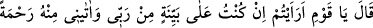
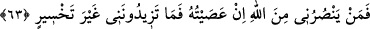

Şüphe, insanın bir şeyi yapmakla yapmamak arasında kararsız kalması demektir. Çünkü
şüphe/rayb, şüphenin bizzat kendisi değil, bir şeyin ne olup-olmadığı konusunda iki
taraftan birini tercih etmeye yarayacak bir ipucunun bulunmaması ya da ipuçlarının
çelişmesidir.
Müftî Sa’dî der ki: “Muvahhidlere göre bocalamaya ve kararsızlığa düşüren Allah
Teâlâ olduğu halde bu kavmin kararsızlığa düşüren şeyin şüphe olduğuna inanmaları da
mümkündür. O zaman ‘kuşkuya düşürmenin, şüpheye isnad edilmesi hakiki olmuş olur.”
63. (Sâlih) dedi ki: “Ey kavmim, eğer ben Rabbim tarafından (verilen) apaçık bir
delil üzerinde isem ve O bana kendinden bir rahmet vermişse, buna ne dersiniz? Bu
durumda O’na karşı gelirsem beni Allah’tan kim korur? O zaman siz de bana ziyan
vermekten fazla bir şey yapamazsınız.”
Sâlih “dedi ki: “Ey kavmim, eğer ben” gerçekten sâhibim ve işlerimi üstlenen
“Rabbim tarafından (verilen) apaçık bir delil” açık bir huccet, burhan ve basîret
“üzerinde isem ve O bana kendinden” kendi katından “bir rahmet” yani peygamberlik
“vermişse, buna ne dersiniz?” yâni bunu bana haber verin bakalım.
Salih (a.s.), peygamber olduğunu ve açık bir delil üzerinde bulunduğunu kesin olarak
bildiği halde şüphe belirten bir ifade kullanması, inkar edenlere hitap etmesinden
kaynaklanmıştır. Bu ifade, ‘farz ediniz ve öyle kabul ediniz ki’ tarzındadır. Bir nevi
şöyle demiş oluyor: “Kabul ve farz edin ki ben Rabb’imden açık bir delil üzereyim ve
gerçekten peygamberim.” “Bu durumda” emrettiği şeyler konusunda Rabb’ime karşı
gelerek sizi uyarsam, peygamberlik görevimi tebliğ etme ve Allah’a şirk koşulmasını
yasaklama konusunda “O’na karşı gelirsem beni Allah’tan kim korur?” Yani Allah’ın
azabına duçar olmama kim engel olabilir?
el-İrşad’da şöyle denilir: “Yâni o zaman Allah’ın azabından beni kurtararak bana kim
yardım edebilir?”
‘Sen bundan önce aramızda ümit beslenen birisiydin.’ şeklindeki sözlerinin de
gösterdiği gibi, “O zaman” beni kendinize uydurmanız halinde “siz de bana ziyan
vermekten” yani amellerimi boşa çıkarmak ve beni O’nun gazabına maruz bırakmak
suretiyle ziyana uğratmaktan “fazla bir şey yapamazsınız.” Bana hiçbir faydanız
dokunmaz. Çünkü Salih (a.s.)’da ziyana uğrama hiç yoktur ki bunu artırmaları söz
konusu olsun.
Bu ifâdenin mânâsı şöyle de olabilir: Benim için sarfettiğiniz bu övgü dolu sözler ve
bana biçtiğiniz rol ile yine sizi hüsranda görmemden ve: ‘Şüpheniz olmasın ki sizler
hüsrandasınız’ dememden daha fazla bir şey yapamazsınız.